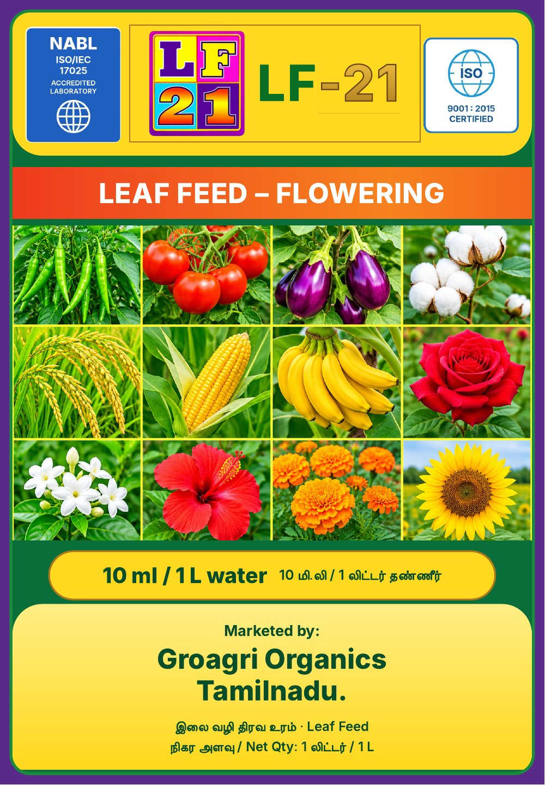
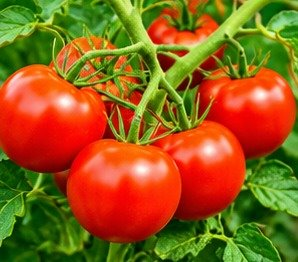
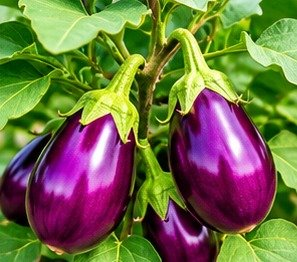
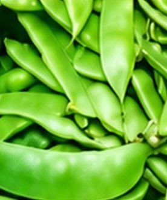
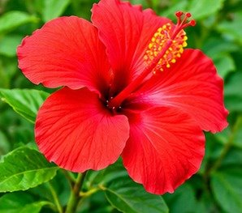
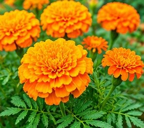

Leaf Feed – Flowering
LF-21
Foliar Liquid Fertilizer · Flowering Stage
Benefits: Promotes flowering, fruit set and yield; keeps leaves green and healthy.
MethodFoliar spray
Dosage10 ml in 1 L water
IntervalOnce every 15 days
Directions for Use
- Shake well before use.
- Mix in clean water; spray on leaves.
- Apply in the early morning or evening.
Precautions
- Keep away from children and pets.
- Not for human or animal consumption.
- Store in a cool, dry place away from sunlight.
| MRP | ₹850 / Litre |
|---|---|
| Net Qty | 1 Litre / 1 L |
| Shelf Life | 3 Years from manufacture |
| Manufactured by | Mazhaithuli Organics |
| Marketed by | Groagri Organics |
| FCO Licence No. | க.எண். உரம்1/95384/2026 |
| Customer Care | +91 8925184969 |
How LF-21 Helps Your Crops

Paddy
Helps improve grain setting during flowering.
Banana
Helps improve flowering and bunch setting.

Maize
Helps improve cob setting.

Cotton
Reduces flower drop and improves boll setting.
Sunflower
Flower heads grow larger and seed setting improves.
Green Chilli
Reduces flower drop; more fruits set.

Tomato
Reduces flower drop and improves fruit set.

Brinjal
Better flower retention; the plant bears more fruits.
French Beans
Reduces flower drop; pod setting increases.

Broad Beans
Reduces flower drop and improves pod setting.

Rose
More buds form and flowers bloom larger.
Jasmine
Bud formation increases and flower yield improves.

Hibiscus
More buds form and help continuous flowering.

Marigold
Increases the number and size of flowers.